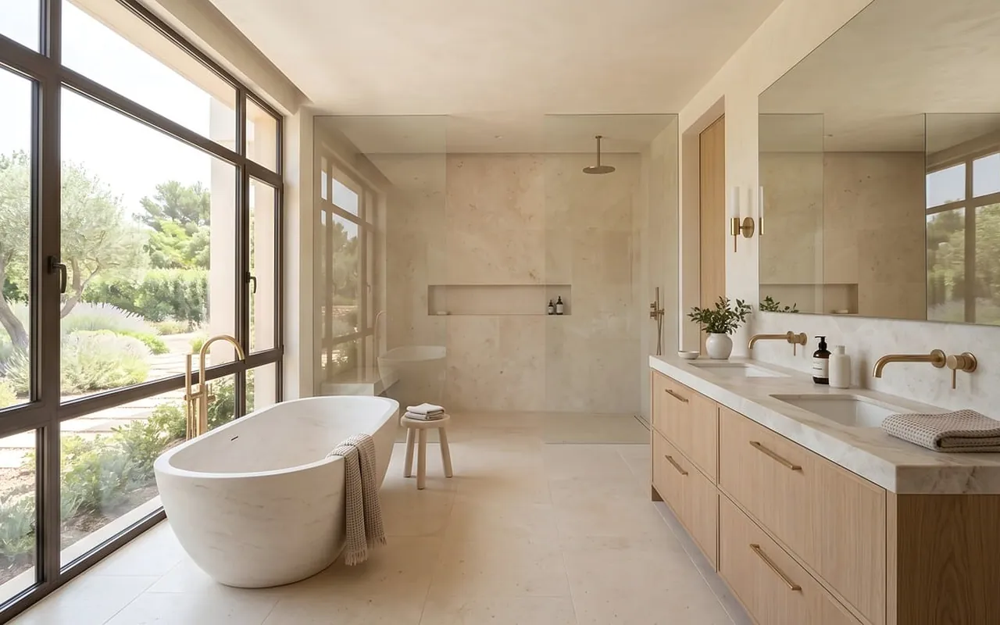
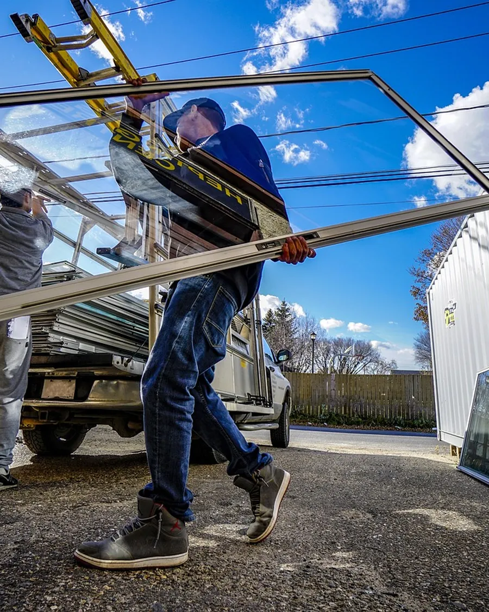
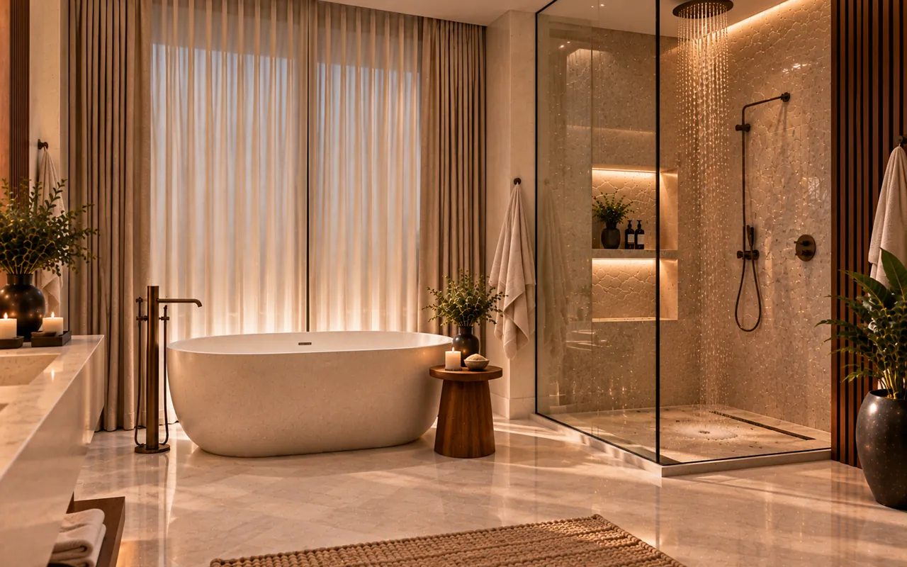
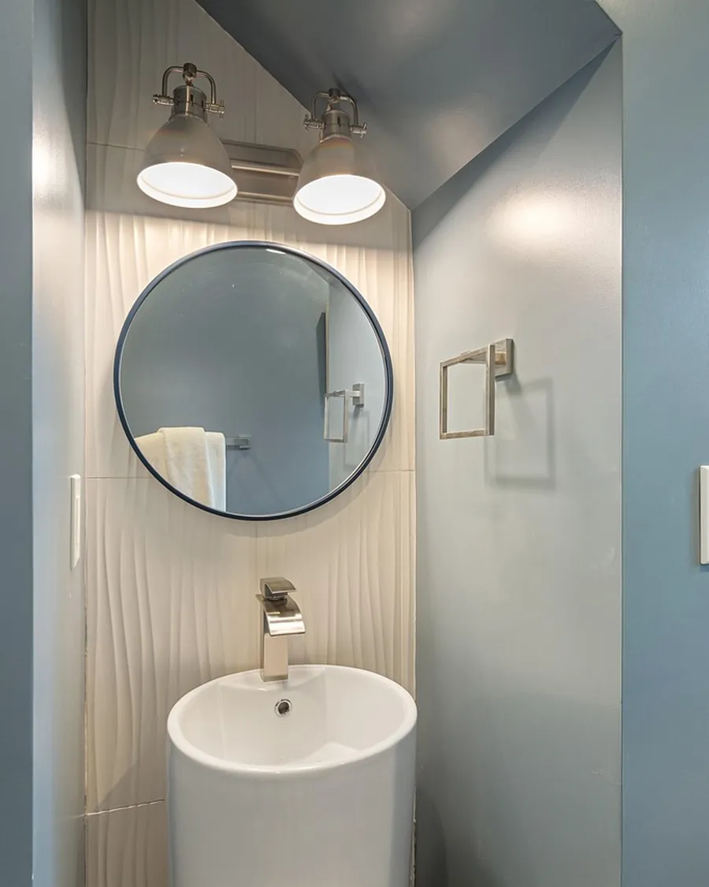
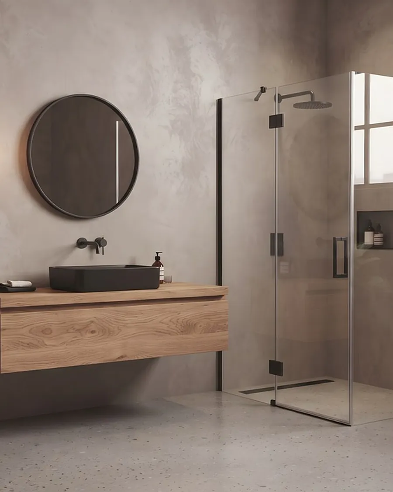

Vitrier de famille
Vitres, double vitrage, miroirs, parois de douche et verre sur mesure. On mesure, on fabrique, on pose, et on repart en laissant la maison propre.
Nos services
Le verre, sous toutes ses formes
Trois questions
Quel verre pour vous ?
Répondez à trois questions : on vous dit quel verre convient, ce qu'il coûte à peu près, et en combien de temps on peut le poser.
Votre conseil apparaîtra ici, après la troisième question.
Réalisations
Du carreau à la baie




Notre façon de faire
Le verre ne pardonne pas l'à-peu-près : on mesure deux fois, on coupe une fois.La famille Prince
Devis et contact
On vient chez vous
Téléphone
04 00 00 00 00Horaires
Du lundi au vendredi, 8 h à 18 h. Le samedi matin sur rendez-vous.